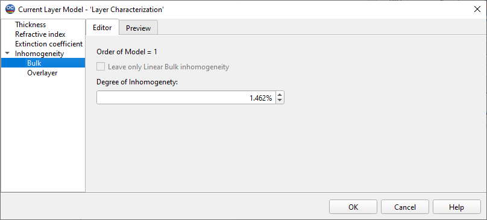

Modify Model
This option allows you to modify the layer model resident in memory.
Changes are applied to the data file currently in memory, leaving the corresponding database measurements data unaffected. The header of the editing window indicates “Current Layer Model.” You can restore the initial data file at any time by reloading it from the Layer Models database. To make your changes permanent, save the modified layer model file in the Layer Models database using the Save Layer Model… command from the Data menu.

The Apply button allows modifications to be made without closing the window, while the OK button applies the modifications and closes the window.
See also: